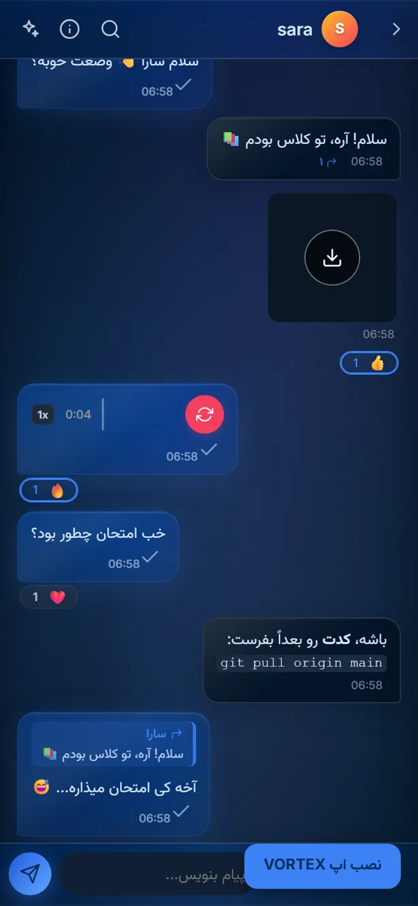
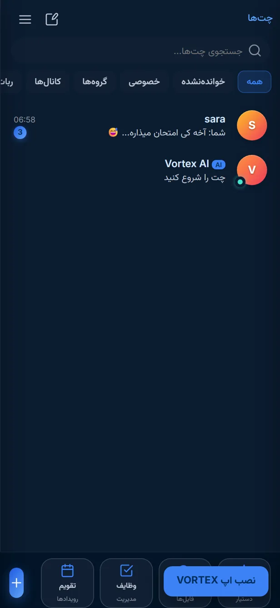
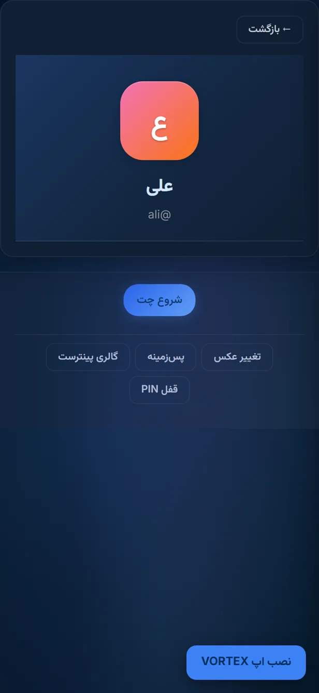

چت بیدرنگ
ارسال فوری پیام با اتصال WebSocket، نشانگر تایپ، وضعیت خواندهشده و ویرایش/حذف پیامها.
پیامرسان تحت وب · فارسی · رایگان
VortexGram یک پیامرسان تحت وب مدرن برای ارتباط سریع، ساده و امن است. بدون نصب و مستقیم در مرورگر — گفتگو کن، عکس و فایل بفرست و گروه بساز.
پیامها بیدرنگ و از طریق اتصال زندهی WebSocket ردوبدل میشوند.
رمزهای عبور با الگوریتم امن scrypt هش میشوند و پیوستها فقط با حساب معتبر دیده میشوند.
از موبایلهای کوچک تا مانیتورهای بزرگ؛ با ظاهری یکپارچه و مدرن.
بدون نصب؛ فقط با باز کردن لینک در مرورگر شروع کن. قابلیت نصب بهعنوان اپ هم دارد.
درباره VortexGram
VortexGram یک پیامرسان تحت وب مدرن است که برای ارتباط و گفتگو در محیطی ساده، سریع و مدرن طراحی شده است. کافی است وارد سایت شوید، با شماره موبایل یا نام کاربری لاگین کنید و گفتگو را شروع کنید.
محیط چت با زبان فارسی و چیدمان راستبهچپ ساخته شده و از ظاهری لایهای و شفاف با تم تیره و روشن بهره میبرد. پیامها با اتصال بیدرنگ ارسال میشوند، تصاویر و فایلها بهصورت محافظتشده ذخیره میشوند و امکاناتی مانند واکنش، پاسخ، گروه و کانال در دسترس است.
نسخهی فعلی فعّالانه توسعه مییابد و برای استفادهی روزمره کاملاً کاربردی است.
همهی این امکانات همین حالا داخل محصول فعال هستند؛ بدون دکمههای پرزرقوبرق و تبلیغاتی.
ارسال فوری پیام با اتصال WebSocket، نشانگر تایپ، وضعیت خواندهشده و ویرایش/حذف پیامها.
ورود با شماره موبایل و کد تأیید یکبارمصرف یا نام کاربری و رمز عبور؛ با قفل اختیاری PIN روی اپلیکیشن.
ارسال عکس و ویدیو با پیشنمایش، پخش مستقیم در چت و مدیریت فایلهای پیوستشده.
ارسال انواع فایل با نوار پیشرفت آپلود و دسترسی امن به فایلهای خصوصی — فقط با حساب معتبر.
ضبط و ارسال پیام صوتی از داخل چت، بههمراه پخش آنلاین و نمایش موج صوتی.
ساخت گروه و کانال، مدیریت اعضا با نقشها، دعوت با لینک و کنترل انتشار پیام در کانال.
واکنش به پیامها با ایموجی، پاسخ به پیام خاص، ارجاع پیام و نظرسنجی و چکلیست داخل چت.
جستجوی کاربران با نام، مشاهده پروفایل، آواتار و بیو، و همگامسازی مخاطبین از دفترچه موبایل.
نُه تم رنگی، هشت رنگ آکسانت، افکت پروفایل و پسزمینهی دلخواه؛ هرطور راحتتری.
نصب بهعنوان اپ روی موبایل و دسکتاپ، استفاده از رابط هنگام آفلاین و دسترسی سریع از هوماسکرین.
خلاصهسازی گفتگو، پیشنهاد پاسخ، ترجمه و بازنویسی پیامها با کمک دستیار هوشمندِ داخل اپ.
اعلان مرورگر برای هر پیام جدید وقتی خارج از صفحه، همراه با شمارندهی خواندهنشده در لیست گفتگوها.
همینها که میبینی بخشی از محیط واقعی VortexGram است — همان تم تیره و ظاهر مدرن واقعی اپ.



اعتماد
امنیت در VortexGram یک ادعای تبلیغاتی نیست؛ بخشی از معماری محصول است. اینجا بدون اغراق میگوییم چه چیزهایی واقعاً انجام میشود:
رمزهای عبور با الگوریتم scrypt بهصورت غیرقابلبازگشت هش میشوند؛ حتی سرور هم رمز اصلی را نمیداند.
عکسها و فایلهای ارسالی فقط با نشست معتبر کاربر قابل مشاهدهاند و در کش عمومی مرورگر ذخیره نمیشوند.
بلاککردن کاربران، مشاهدهی دستگاههای لاگینشده، تعیین رمز و قفل PIN بهصورت بومی در اپ وجود دارد.
نرخ ارسال پیام، تلاش ورود و اتصالهای همزمان محدود شده تا از سوءاستفاده و اسپم جلوگیری شود.
VortexGram یک پیامرسان تحت وب مدرن است که مستقیماً در مرورگر اجرا میشود و امکان چت بیدرنگ، ارسال عکس و فایل، پیام صوتی، گروه و کانال را فراهم میکند. رابط کاربری آن فارسی و راستبهچپ است و با تم تیره یا روشن و ظاهر مدرن طراحی شده است.
بله، VortexGram کاملاً تحت وب است و برای شروع فقط به یک مرورگر نیاز دارید — بدون دانلود و نصب. همچنین بهعنوان یک اپلیکیشن پیشرونده (PWA) قابل نصب است و با یک آیکون از هوماسکرین موبایل یا دسکتاپ میتوانید به آن دسترسی داشته باشید.
کافی است وارد بخش «ورود» شوید. دو روش وجود دارد: ورود با شماره موبایل و دریافت کد تأیید (OTP)، یا ورود با نام کاربری و رمز عبور. پس از ثبت، نام نمایشی و نام کاربری خود را انتخاب میکنید و آمادهی گفتگو هستید.
بله. رابط کاربری کاملاً واکنشگرا است و در تمام ابعاد صفحه کار میکند. علاوه بر نسخهی وب، قابلیت نصب بهعنوان PWA روی موبایل و دسکتاپ و نسخهی اندروید نیز پشتیبانی میشود.
متن (با پشتیبانی از Markdown)، عکس، ویدیو، فایل بهصورت پیوست، پیام صوتی ضبطشده و فایل صوتی. علاوه بر این، امکاناتی مانند واکنش به پیام، پاسخ به پیام خاص، نظرسنجی و چکلیست در دسترس است.
پیامها و فایلهای شما در سرور VortexGram ذخیره میشوند تا در دستگاههای مختلف در دسترس باشند. رمزهای عبور با الگوریتم scrypt هش میشوند و پیوستهای خصوصی فقط با حساب معتبر قابل مشاهدهاند. جزئیات بیشتر در صفحهی حریم خصوصی آمده است.
رایگان است، سرعتش را اول پیام حس میکنی و برای شروع حتی یک نصب هم لازم نیست.